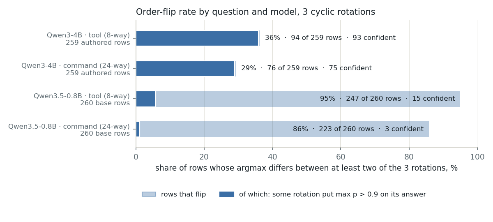
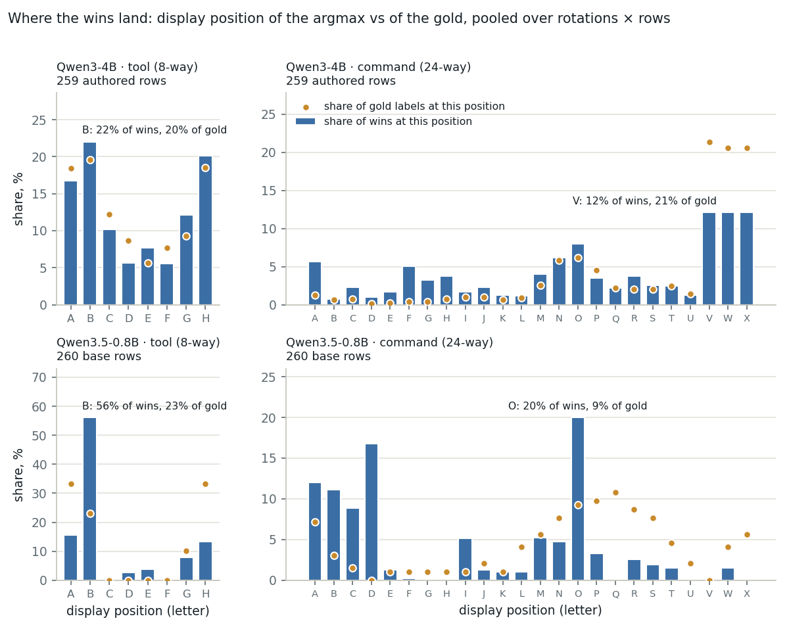
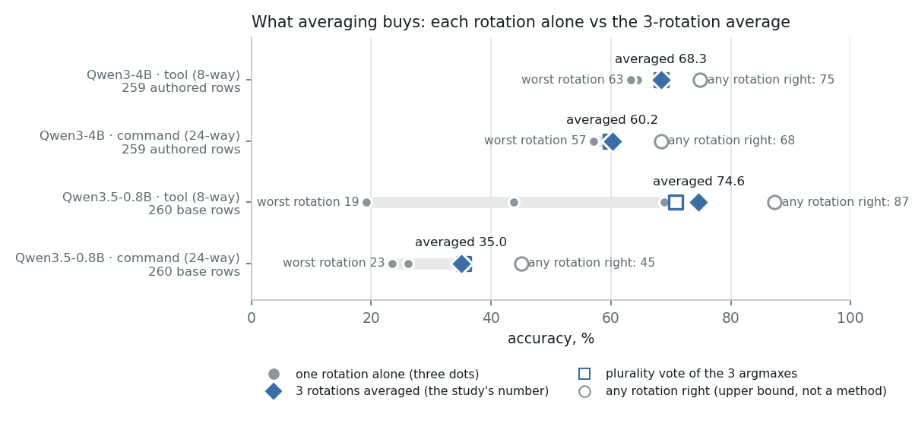

When the option order changes the answer: order sensitivity of the readout
A next-token readout reads one token's distribution over letter labels, and the letter a small model prefers depends on which option sits behind it. This page measures how often the resident 4B and a 0.8B decoder change their answer when the option list is rotated, what averaging three rotations buys, what it costs, and what else would help.
per_rotation). Two receipts carry it: the 4B on the 259 authored rows and the 0.8B (thinking off) on the 260 base rows. The 4B's base-row receipt predates the field and holds averaged probabilities only, so the two models are compared on different rows. The yes/no questions were recorded with one rotation and have no flip statistic. Every flip, accuracy and position statistic here comes from bench/order_sensitivity.py over those receipts; latency, temperatures and the encoder numbers are cited from their own receipts; nothing was re-run on the board. The readouts and the rows come from a study that served typed, calibrated decisions beside an offline network-management assistant on a Qualcomm board: the write-up holds the accuracy and calibration numbers the rotations feed into, and the repository holds the receipts.How a rotation is built
bench/run_readout.py and jevlet/backends/llamacpp.py build the three requests. The letters stay with their positions and the options move, so a model that likes the letter B picks a different option in every rotation, and a model that knows the answer picks the same option under three different letters.In rotation r the option list is shown in the order (i + r) mod k: option r comes first under label A, option r + 1 under B, and so on. The server returns the pre-sampling distribution at the first generated token; the mass on each letter is assigned to the option shown behind it, so each rotation yields a probability vector in canonical option order. combine_rotations stores the arithmetic mean of the three vectors as probs and the mean log-probability as logits, which the temperature fit uses; per_rotation keeps the three vectors. Three cyclic rotations cover three of the k! orderings, chosen so that each of the first three options is shown first once.
What flips

| readout · rows | question | k | flips | rows | one rot > 0.9 | two > 0.9, split |
|---|---|---|---|---|---|---|
| Qwen3-4B · 259 authored | tool | 8 | 36.3% | 94 | 93 | 71 |
| Qwen3-4B · 259 authored | command | 24 | 29.3% | 76 | 75 | 49 |
| Qwen3.5-0.8B · 260 base | tool | 8 | 95.0% | 247 | 15 | 0 |
| Qwen3.5-0.8B · 260 base | command | 24 | 85.8% | 223 | 3 | 0 |
"Flips" counts rows whose argmax differs between at least two rotations; per rotation pair it is 24.3 / 28.6 / 22.4% (4B tool), 23.9 / 19.7 / 23.6% (4B command), 71.2 / 92.3 / 71.9% (0.8B tool) and 66.9 / 71.9 / 74.2% (0.8B command). The two questions missing from this table have no flip statistic: is_write and touches_poe_power are yes/no and were recorded with one rotation, and the 4B's 260-base-row receipt predates the per_rotation field on all four questions.
Two different phenomena share the word "flip". The 4B flips with conviction: on 258 of the 259 authored rows some rotation puts more than 0.9 on its answer, for each question, and on 71 tool rows and 49 command rows two rotations are each above 0.9 on different answers. The 0.8B flips almost everything and believes almost nothing: only 23 tool rows and 8 command rows reach 0.9 in any rotation, and its fitted temperatures on the tool question are 0.29 to 0.30, below one, where the 4B's are 5.2 to 5.8.
What the 4B flips between is what it confuses anyway. On the tool question the most frequent pairs are query_device_info ↔ configure_device_setting (33 rows), query_device_info ↔ diagnose_port_issues (19), configure_device_setting ↔ diagnose_port_issues (12) and query_device_info ↔ get_network_events (10); 17 of the 94 flipped rows involve none_of_these. On the command question: show_port_status ↔ show_all_ports_status (14), show_cable_diagnostics ↔ none_of_these (7), enable_port ↔ disable_port (6), show_all_ports_status ↔ show_poe_status (6), speed ↔ duplex (5); 21 of the 76 involve none_of_these and 5 involve a dangerous pair. The 0.8B's command flips involve a dangerous pair on 31 of 223 rows.
Where the 4B's flips sit (authored rows)
| authored subset | rows | tool flips | tool acc. | command flips | command acc. |
|---|---|---|---|---|---|
| adversarial confusables | 81 | 30.9% | 88.9% | 21.0% | 69.1% |
| symptom-first diagnostics | 54 | 33.3% | 72.2% | 53.7% | 40.7% |
| documentation / out-of-scope | 76 | 53.9% | 34.2% | 27.6% | 60.5% |
| other tools | 48 | 20.8% | 83.3% | 18.8% | 66.7% |
| style | rows | tool flips | tool acc. | command flips | command acc. |
|---|---|---|---|---|---|
| A casual | 93 | 43.0% | 58.1% | 40.9% | 53.8% |
| B verbose | 24 | 33.3% | 79.2% | 12.5% | 79.2% |
| C indirect | 28 | 25.0% | 60.7% | 32.1% | 46.4% |
| T terse / typos | 25 | 44.0% | 48.0% | 28.0% | 56.0% |
| X adversarial confusables | 89 | 31.5% | 84.3% | 21.3% | 67.4% |
Accuracy is of the three-rotation average. Flips track difficulty. Rows the averaged answer gets wrong flip 56% (tool) and 49% (command) of the time; rows it gets right flip 27% and 17%. Averaged accuracy is 78.2% / 71.0% on the stable rows and 51.1% / 34.2% on the flipped ones. Cells hold 24 to 93 rows, so differences of a few points between subsets are noise.
Position bias: letter or content?

The pooled comparison separates a letter preference from an ordinary confusion. If wins land at a position more often than the gold does, the model likes that position; if both distributions match, whatever errors remain are about the options, not the letters.
The 4B has almost no letter preference. On the tool question the share of wins at each position stays within 3.0 points of the gold share (total variation 8.9%); the first-shown option wins 16.7% of the time against an 18.4% gold share and a 12.5% chance level. Its flips are content confusions that happen to depend on order. On the command question the three positions V, W and X, which hold none_of_these in rotations 2, 1 and 0, take 12.1% of the wins each against 20.6 to 21.4% of the gold: the known under-use of none_of_these on out-of-scope rows, not a letter effect. One small first-position pull is measurable on the 24-way list: the option shown first wins 5.7% of the time, against 2.1% when the same option sits elsewhere and a 1.3% gold share.
The 0.8B has a letter preference, and it is B. Position B collects 56.2% of the tool wins against 23.1% of the gold; position A gets 15.5% against 33.3%. The three options that occupy B across the rotations, configure_device_setting, diagnose_port_issues and search_documentation, make up the first, third and fourth most common flip pairs (117, 90 and 61 rows). Rotation 2 puts search_documentation, gold on no base row, at B, and that rotation alone scores 19.2%. On the command question the wins pile onto A to D and O (O: 20.0% of wins, 9.2% of gold; D: 16.8% against 0.0%), while positions Q to T, holding 4.6 to 10.8% of the gold each, receive 0 to 2.6%. Total variation is 40% on tool and 52% on command. Averaging helps this model precisely because its bias lands on a different option in each rotation and partly cancels.
What averaging buys

| readout · question | rot 0 | rot 1 | rot 2 | averaged | vote | any right | all right |
|---|---|---|---|---|---|---|---|
| Qwen3-4B · tool | 64.5% | 64.5% | 63.3% | 68.3% | 68.3% | 74.9% | 49.8% |
| Qwen3-4B · command | 60.2% | 57.1% | 60.2% | 60.2% | 59.8% | 68.3% | 50.2% |
| Qwen3.5-0.8B · tool | 68.8% | 43.8% | 19.2% | 74.6% | 70.8% | 87.3% | 4.6% |
| Qwen3.5-0.8B · command | 35.8% | 26.2% | 23.5% | 35.0% | 35.4% | 45.0% | 10.4% |
Against rotation 0, the catalog's own order, averaging adds 3.9 tool points and 0.0 command points for the 4B and 5.8 and −0.8 for the 0.8B; against the mean of the three single rotations it adds 4.2, 1.0, 30.6 and 6.5. The 4B's averaged command accuracy allowing the row's listed alternatives is 64.1%. A plurality vote matches or trails the mean in three of four cases and beats it by 0.4 points on the 0.8B command question, within noise. The bound leaves 6.6 (tool) and 8.1 (command) points on the table for the 4B and 12.7 and 10.0 for the 0.8B: some rotation was right on 17 tool and 21 command rows that the 4B's average still gets wrong, 33 and 26 for the 0.8B. Rotation 0 is the best or joint-best single rotation in all four cases, which is a property of this catalog order, not something to rely on.
Averaging is a partial fix for accuracy and a weak fix for over-confidence. Taken alone, the 4B's rotations were wrong above 0.9 on 79, 74 and 79 tool rows and 91, 91 and 80 command rows; averaging rescued 15, 8 and 14 of the former and 7, 9 and 3 of the latter, and 32 tool errors and 51 command errors remain above 0.9 after it. The temperature step on the results page is what takes the rest of the confidence down.
Disagreement as a signal
A row whose rotations disagree could be sent to the human instead of answered. For the 4B that rule keeps 63.7% of the tool rows at 78.2% accuracy and 70.7% of the command rows at 71.0%. The averaged distribution already carries the same information, and carries it better: the maximum averaged probability ranks correct above wrong answers with AUROC (area under the receiver operating characteristic curve) 0.736 on tool and 0.762 on command, against 0.645 and 0.659 for the stable-versus-flipped indicator, because the mean of three disagreeing vectors is flat (mean max p 0.64 and 0.56 on flipped rows against 0.99 on stable ones). For the 0.8B only 13 tool rows and 37 command rows are stable at all, so the indicator is useless there (AUROC 0.523 and 0.619).
What it costs
| what is asked | board CPU, 6 threads | development host, 12 threads |
|---|---|---|
| one tool question, one ordering | 1.28 s | 0.61 s |
| one tool question, three rotations | 3.84 s | 1.83 s |
| one command question, one ordering | 1.32 s | 0.71 s |
| one command question, three rotations | 3.96 s | 2.13 s |
| four-question battery, one ordering | 5.07 s | 2.44 s |
| four-question battery, three rotations on the two choice questions | 10.27 s | 5.08 s |
Single-ordering cells are median wall times per request from results/latency-readout.json for the 4B (quiet host, legend prefix cached, about 20 of the 425 tool-prompt or 666 command-prompt tokens evaluated per call). Three-rotation cells are three times those medians: arithmetic, not measurement. Board = Qualcomm QCS9075; development host = the Grace CPU. The 0.8B's latency was not measured on the board.
Two caveats on the arithmetic. The benchmark loops rotation-major, all rows under rotation 0, then 1, then 2, so the legend stays in the server's prefix cache; the receipts' own summed latency for three rotations on the loaded development host was 3.0 s (tool) and 2.2 s (command) per row for the 4B and 0.43 and 0.45 s for the 0.8B. A per-call loop over three rotations, which is what _decide does at serving time, alternates three different system prompts on one slot; the backend's docstring points callers at rotation-major batching precisely so that the prefix cache is reused, and the per-call cost was not measured. Rotation averaging is therefore a per-write cost, in line with how the results page splits the work: encoder for the per-turn router, readout for the per-write gate.
What does not fix it, and what might
- Temperature does not touch order. A fitted temperature rescales the averaged log-probabilities; it cannot change the argmax of any rotation or of the mean, so the flip rate is the same before and after scaling. The 71 tool rows and 49 command rows on which two rotations are each above 0.9 on different answers show why: no scalar reconciles two confident, contradictory answers, it only lowers both. Sampling temperature does not enter at all: the readout runs at temperature 0 and reads the distribution instead of sampling from it.
- More rotations cost linearly and are bounded. Cyclic rotations give k orderings out of k!, each one request. The any-rotation bound (74.9% tool, 68.3% command for the 4B) caps what further rotations of this kind can recover, at up to k times the price of one request (8 for the tool question, 24 for the command question).
- An encoder trained with option shuffling. The fine-tuned ModernBERT on the results page scores each option's span with a softmax inside the question and was trained with gold-preserving augmentation that shuffles the options at rate 0.5; its second round also permuted the question order, and trained twice as long, and went from 65.1% to 77.8% on the command question. Its receipts carry no per-rotation data, so its option-order flip rate is not measured here; the expectation is that it is low, and that should be measured before it is claimed.
- Hierarchical questions. Ask the 8-way tool question first, then a command question among that tool's own commands: 13 read commands under
query_device_info, 10 write commands underconfigure_device_setting, instead of 24 at once. One zero-shot encoder (Verdict) collapses to a single label above about six options when the options carry descriptions, which is the other argument for it. Not measured here. The 4B's own numbers warn against expecting arity alone to do it: its 24-way command question flips less (29%) than its 8-way tool question (36%); the hard rows drive the flips, not the length of the list. - Abstain on disagreement. Free once the rotations are paid for, but the averaged confidence is the better signal (AUROC 0.74 / 0.76 against 0.65 / 0.66).
- Earlier and other measurements. An earlier single-ordering pass on a 15-way variant of the command question flipped 15.8% of its predictions when the order was reversed (reported in the write-up, not re-run here, no receipt in the repository). On the compiled NPU (neural processing unit) path, where the same 4B answers with a text label instead of a distribution, 7% of its labels changed on reversed order, measured live on the 195 paraphrases.
Caveats
- The two models are measured on different rows: the 4B's rotation data exist only for the 259 authored rows, the 0.8B's only for the 260 base rows. The 4B's base-row receipt predates the
per_rotationfield and was not re-run. Nothing on this page says how much the 4B flips on the easy rows. - Yes/no questions were recorded with one rotation and a fixed Yes/No label order; no reversal experiment exists for them.
- Three cyclic rotations reach three of the k! orderings, so each display position hosts only three options in the pooled shares; the paired first-versus-elsewhere numbers cover the three options that are shown first at all.
- Averaging in probability space and in log space disagree on the argmax of 9 tool and 8 command rows for the 4B and 43 and 28 for the 0.8B; the raw accuracies use the probability mean, the calibrated numbers on the results page use the log-space mean. Neither is more right; the disagreement is one more thing order sensitivity does.
- Labels on the authored rows are written and verified by large language models (LLMs), human review pending; N is in the hundreds, so per-subset differences of a few points are within noise; the accuracy runs were on the development host and the board contributed latency only.
Reproduce
The receipt's definitions block states every statistic; the all-rot3 file carries rotation data for its 259 authored rows only and reproduces the authored numbers.